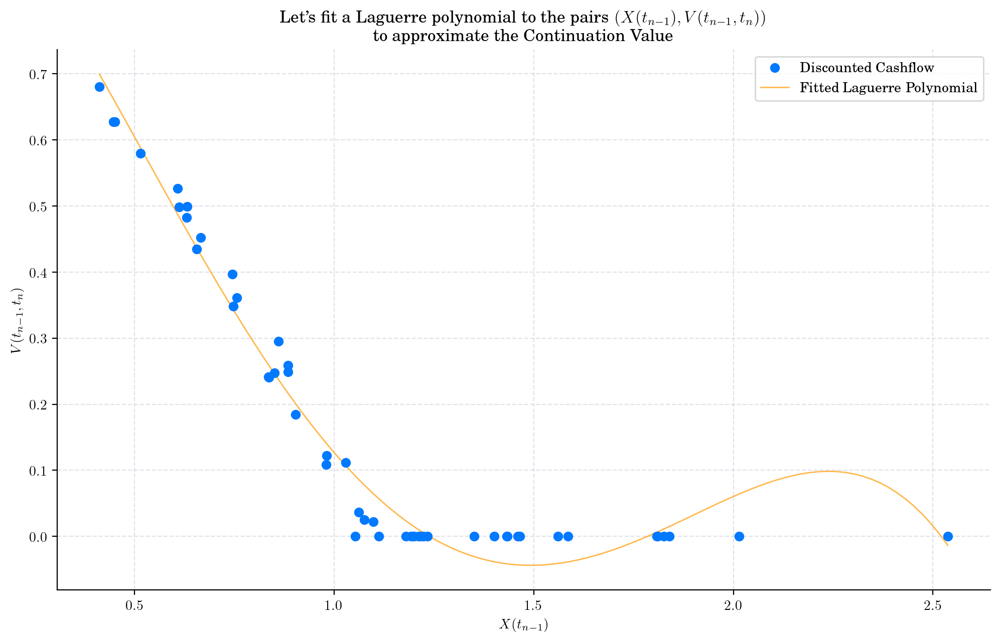
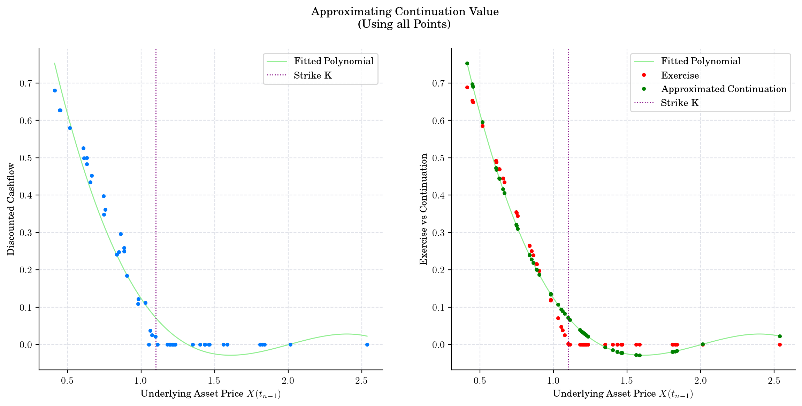
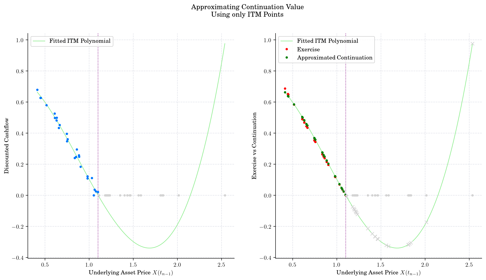

American Options Pricing using the Longstaff-Schwartz Algorithm#
This notebook is part of the materials that I used in my industry expert Lecture at KCL. You can find the slides and further details here:
In this notebook, we are going to illustrate the Longstaff-Schwartz Algorithm to price American options.
import numpy as np
from ipywidgets import interact, IntSlider
from aleatory.processes import GBM
from aleatory.utils.plotters import draw_paths
%config InlineBackend.figure_format ='retina'
import matplotlib.pyplot as plt
my_style = "https://raw.githubusercontent.com/quantgirluk/matplotlib-stylesheets/main/quant-pastel-light.mplstyle"
plt.style.use(my_style)
plt.rcParams["figure.figsize"] = (12, 7)
plt.rcParams["figure.dpi"] = 100
Asset Price Dynamics#
We are going to use a Geometric Brownian process to model the dynamics of the price of the underlying asset. This means that \(X\) satisfies the following SDE
with \(X_0=x_0>0\), where \(W_t\) denotes a standard Brownian Motion, and both \(r\) and \(\sigma\) are known parameters.
Parameters, Maturity, Simulation Specs#
r = 2%
\(\sigma\) = 15%
\(x_0=1.0\)
Maturity T=6 (we can think of this as 6 months from today)
We will simulate \(N=50\) paths over a grid of \(n = 120\) points (20 days in each of the 6 months)
r = 0.02
sigma = 0.15
x0 = 1.0
T = 6
N = 50
n = 20*6
gbm = GBM(initial=x0, drift=r, volatility=sigma, T=T)
paths = gbm.simulate(n=n, N=N) # N paths, with n points
Simulation#
Let’s take a look at our simulation.
{kind=link}
American Option Contract#
Today the asset price is \(x_0 = 1.0\)
We are entering an American (which we approximate via a Bermudan!) Put option contract as the writer/seller.
The holder/buyer has the exercise right at any point between today (time \(t_0=0\)) and maturity \(t_n=T=6\).
If the holder decides to exercises at time \(t_i\), this means that he/she will sell the asset (whose market price is \(X(t_i)\) at that moment) at price \(K=1.1\) to us.
K = 1.1
What happenes on the grid points?#
If \(X(t_i) \geq K\), then the holder has no incentive to exercise the option (This would mean selling the asset at price \(K\) which makes no sense!)
If \(X(t_i) < K\), then the option is ITM and the holder may want to exercise it. The payoff in case of exercise at time \(t_i\) would be
We can visualise the times when the simulated paths have a positive payoff.
{kind=link}
Let’s take a look at a couple of paths to have a cleaner picture
{kind=link}
{kind=link}
{kind=link}
{kind=link}
Next, we implement the payoff/exercise function and plot it.
def exercise_value(x):
return np.maximum(K - x, 0)
{kind=link}
A every time \(t_{i}\), the holder can exercise the option to obtain the payoff, i.e.:
We want to estimate the Continuation Value,
Longstaff-Schwartz Algorithm#
This is a backwards algorithm, so we will start at time \(T=t_n\).
At time \(t_n\), the option value is exactly the payoff as there is no more time left.
A time \(t_{n-1}\), we want to find what is the best choice between Exercise and Continuation, i.e.:
where
The value of exercise is
Now the key observation is that if the holder decides not to exercise, then our option behaves like an European one (the exercise decision has to be made in the next step and there is no early exit choice) over the period \([t_{n-1}, t_n]\). Thus, we know the discounted value of the option would be given by
{kind=link}
So, the idea of the Longstaff-Schwartz Algorithm is to use the least-squares method to fit a polynomial function to the pairs
and then use such polynomial to approximate the continuation value as follows:
There are two choices to make here:
Type of Polynomial e.g. Laguerre, Hermite, Chebyshev, Jacobi
Degree of the Polynomial
We can try with a Laguerre polynomial of dregree 4.
cashflow = exercise_value(X[-1, :]) * np.exp(-r * (times[-2] - times[-1]))
x = X[-2, :]
plt.figure()
plt.plot(x, cashflow, "o", label="Discounted Cashflow", zorder=3)
fitted = np.polynomial.Laguerre.fit(x, cashflow, 4)
plt.plot(*fitted.linspace(), label="Fitted Laguerre Polynomial")
plt.xlabel("$X(t_{n-1})$")
plt.ylabel("$V(t_{n-1}, t_n)$")
plt.legend()
plt.title("Let's fit a Laguerre polynomial to the pairs $(X(t_{n-1}), V(t_{n-1}, t_n))$\n to approximate the Continuation Value")
plt.show()
fitted
{kind=link}

We can try other choices!
{kind=link}
fitted
fitted_laguerre
fitted_chebyshev
Once we have made these choices, we can proceed to approximate the Continuation Value.
{kind=link}

Using only ITM points.
{kind=link}

indices = [90, 80, 50, 20, 10]
t = times
for n, i in enumerate(indices):
fig, ax = plt.subplots()
plot_approx_n(i, ax)
ax.set_title(f"Approximation of Continuation Value at t={t[-i-1]:0.2f}")
plt.xlabel("Underlying Asset Price X(t)")
plt.ylabel("Exercise / Continuation Value")
plt.show()
{kind=link}
{kind=link}
{kind=link}
{kind=link}
{kind=link}
exercise_times = []
exercises = []
non_exercise_times = []
non_exercises = []
for i, (cashflow, x, fitted, continuation, exercise, ex_idx) in enumerate(intermediate_results):
for ex in x[ex_idx]:
exercise_times.append(t[-i - 1])
exercises.append(ex)
for ex in x[~ex_idx]:
non_exercise_times.append(t[-i - 1])
non_exercises.append(ex)
plt.figure()
for path in paths:
plt.plot(times[1:], path[:-1], ':', color="lightgrey", zorder=1)
plt.plot(exercise_times, exercises, ".", color="red", label="Exercise Favourable", zorder=3)
plt.plot(non_exercise_times, non_exercises, ".", color="lightgreen", alpha=0.3, label="Continuation Favourable")
plt.axhline(y=1.1, linestyle=':', color="purple", label="Strike $K$")
plt.legend()
plt.xlabel("Time $t$")
plt.ylabel("Underlying Asset Price $X(t)$")
plt.title("Simulated Paths\n showing Exercise or Continuation Decision")
plt.show()
{kind=link}
n_timesteps, n_paths = X.shape
first_exercise_idx = n_timesteps * np.ones(shape=(n_paths,), dtype="int")
for i, (cashflow, x, fitted, continuation, exercise, ex_idx) in enumerate(intermediate_results):
for ex in x[ex_idx]:
idx_now = (n_timesteps - i - 1) * np.ones(shape=(n_paths,), dtype="int")
first_exercise_idx[ex_idx] = idx_now[ex_idx]
for idx, path in enumerate(paths):
stop = first_exercise_idx[idx]
(handle_path_before,) = plt.plot(times[:stop], path[:stop], color="lightgreen")
(handle_path_stop,) = plt.plot(times[stop-1:], path[stop-1:], ':', color="lightgrey")
if stop < len(times):
(handle_path_after,) = plt.plot(times[stop-1], path[stop-1], 'r.', zorder=3)
strike_line = plt.axhline(y=K, linestyle=':', color="purple")
plt.xlabel("Time $t$")
plt.ylabel("Underlying Asset Price $X(t)$")
plt.title("Simulated Paths\n showing First Early Exercise instances")
plt.legend([handle_path_before, handle_path_stop, handle_path_after, strike_line],
["Path before exercise", "Path after exercise", "First favourable exercise", "Strike $K$"])
plt.show()
{kind=link}
for idx, path in enumerate(paths[:3]):
stop = first_exercise_idx[idx]
(handle_path_before,) = plt.plot(times[:stop], path[:stop], color="lightgreen")
(handle_path_stop,) = plt.plot(times[stop-1:], path[stop-1:], ':', color="lightgrey")
if stop < len(times):
(handle_path_after,) = plt.plot(times[stop-1], path[stop-1], 'r.', zorder=3)
strike_line = plt.axhline(y=K, linestyle=':', color="purple")
plt.xlabel("Time $t$")
plt.ylabel("Underlying Asset Price $X(t)$")
plt.title("Simulated Paths\n showing First Early Exercise instances")
plt.legend([handle_path_before, handle_path_stop, handle_path_after, strike_line],
["Path before exercise", "Path after exercise", "First favourable exercise", "Strike $K$"])
plt.show()
{kind=link}
df = np.exp(-r * (t[1] - t[0]))
american_option = cashflow * df
european_option = exercise_value(X[-1, :]) * df
assert np.average(american_option) >= np.average(european_option)
print(np.round(np.average(american_option), 6))
print(np.round(np.average(european_option), 6))
0.200409
0.172859